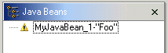

During normal development, exceptions are sometimes thrown by
the Java beans. For example, when they are instantiated or when property values
are applied. If an exception if thrown when a property value is applied, then
the Java bean is recreated and all of the other valid properties are applied.
A warning sign is shown in the Design view and the Java beans view to indicate
that an exception occurred

When you select a Java bean that has a warning, the status line will show you the property that threw the exception as well as the exception message. For example, if the button's text property threw a runtime exception the status bar would be:

When the exception is thrown during the application of a property value, the Java bean is recreated and the property ignored. The warning sign indicates that the representation of the live Java bean, as shown in the Design view or the Properties view, is incomplete as the errant property has not been applied.
In addition to exceptions thrown when property values are applied, there may be an exception thrown during instantiation of the Java bean. In this case it is not possible to partially create the Java bean, as was done for bad property values, so no live Java bean will be present. To indicate this, for errors thrown during instantiation of the Java bean, a red x is shown in the Design view and Java Beans view. You can select the Java bean to see the exception message in the status line.
There is a 'Too complicated' error, represented by a blue circle with an exclamation point. This occurs when the initialization string for a property is too complicated for the Visual Editor to understand.